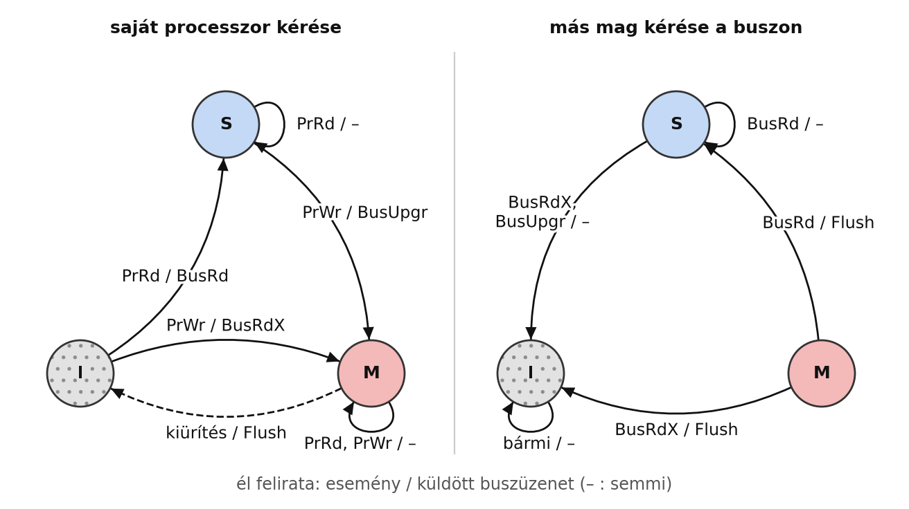

Két szál ugyanazt a számlálót növeli, mindkettő saját magon,
fetch_add atomi utasítással. A mérőgépen (i5-13400F,
2026-11-25, -O2, a bench_counter program
shared változata) egy szálnak egy növelés körülbelül 4,0
ns-ba kerül. Két szálnál, két fizikai magon, szálanként már 19,4 ns-ba.
Ugyanaz az utasítás, ugyanaz a memóriacím, mégis majdnem ötször drágább
– pusztán azért, mert egy másik mag is nyúl hozzá.
A háttérben a Csere- és írási stratégiák write-back politikája áll. Minden magnak saját L1 és L2 cache-e van (ezen a gépen P-magonként 48 KiB L1 adatcache és 1280 KiB L2), és az írás először csak a saját cache-ben történik meg. A memória régi értéket őriz, a másik mag cache-ében pedig akár egy még régebbi másolat ülhet. Ha a hardver semmit sem tenne, egy jelzőváltozóra váró szál örökre a saját, elavult másolatát olvashatná, és a program sosem lépne tovább.
A valódi többmagos processzorokon ez nem történik meg, mert a cache-eket koherenciaprotokoll köti össze. Megnézzük, mit ígér pontosan, és megépítjük a legegyszerűbb működő változatát (MSI). Az ötszörös ár magyarázata ennek az üzeneteiben rejlik.
Gondolj egy cache-sorra úgy, mint egy közös füzetre, amelyből minden mag fénymásolatot tarthat. A szabály egyszerű: a füzetet vagy sokan olvashatják egyszerre, vagy pontosan egy valaki írhat bele – a kettő sosem egyidejűleg. Aki írni akar, előbb visszakéri (érvényteleníti) az összes többi másolatot. Aki ezután olvasni akar, a legfrissebb változatot kapja, akár a memóriából, akár közvetlenül attól, aki utoljára írt bele.
A magokat és a memóriát egy közös busz (bus) köti össze. Minden cache-vezérlő figyeli, „lehallgatja” a buszon elhangzó kéréseket – ezt hívjuk szimatoló (snooping) protokollnak. Ha valaki olyan sort kér, amelyet egy másik cache módosítva tart, a tulajdonos válaszol. Ha valaki írni készül, a többiek eldobják a másolatukat.
Az alábbi ábra négy lépést mutat egy kétmagos rendszerben. A
cache-doboz bal mezője az állapot betűje (M, S vagy I), a jobb mezője az
x változó értéke; a vastag kék vonal jelzi, ki beszél a
buszon. Figyeld meg a 3. lépést: P0 írásához elég egy rövid
BusUpgr üzenet, adat nem mozog, de P1 másolata eltűnik. A
4. lépésben P1 olvasása már a P0-tól érkező friss értéket kapja
(Flush), és a memória is frissül.
Fontos: a protokoll cache-sorok egységében dolgozik (a mérőgépen 64 bájt), nem változónként.
Vegyünk két magot privát write-back cache-sel, x
kezdetben 0, és semmilyen egyeztetés.
| lépés | művelet | P0 cache | P1 cache | memória |
|---|---|---|---|---|
| 1 | P0 olvas x |
0 | – | 0 |
| 2 | P1 olvas x |
0 | 0 | 0 |
| 3 | P0 ír x = 5 |
5 (piszkos) | 0 | 0 |
| 4 | P1 olvas x |
5 (piszkos) | 0 (találat!) | 0 |
A 4. lépésben P1 saját cache-ében találatot kap, ezért senkit nem kérdez meg, és az elavult 0-t olvassa. Ez a helyzet addig tart, amíg a sor véletlenül ki nem szorul a cache-éből – ami akár soha nem következik be.
Definíció. Egy memóriarendszer koherens (coherent), ha minden egyes cache-sorra fennáll a következő két invariáns (olyan állítás, amely minden pillanatban igaz) [S-PRIMER]:
Szavakban: írás közben senki más nem látja a sort, és minden hozzáférő a legutóbbi írás eredményét látja. A fenti táblázat 4. lépése mindkettőt megsérti: P0 írási szakaszában P1 is olvas, és régi értéket kap.
A koherencia egyetlen cím (sor) viselkedéséről szól.
Nem mond semmit arról, hogy két különböző cím írásait milyen
sorrendben látja egy másik mag. Ha P0 előbb adat = 42-t,
majd kész = 1-et ír, a koherencia garantálja, hogy mindkét
változó külön-külön egységes képet ad, de azt nem, hogy aki
kész = 1-et lát, az adat = 42-t is látja. Ez
utóbbi a memóriakonzisztencia (memory consistency)
kérdése; Szekvenciális konzisztencia és
litmus-tesztek tárgyalja. A koherencia tehát szükséges, de nem
elégséges a helyes párhuzamos programhoz.
Továbbvitt eredmény. A koherencia soronkénti ígéret:
az SWMR-invariáns és az adatérték-invariáns; a különböző címek közötti
sorrend már a konzisztenciamodell dolga. Az invariánsokat a könyv
archkit.coherence szimulátora minden lépés után ellenőrzi;
erre épít a MESI és MOESI, a Directory-alapú koherencia és skálázódás, A koherencia ára: ping-pong és false sharing és az
Atomi műveletek a hardverben, a
megkülönböztetésre pedig a Szekvenciális
konzisztencia és litmus-tesztek.
Az írás előtt kétféleképpen lehet a másolatokat rendbe tenni.
| érvénytelenítés | frissítés | |
|---|---|---|
| írás, ha más is tartja a sort | egy üzenet az első írás előtt | üzenet minden íráskor |
| a többiek következő olvasása | hiba, újra le kell kérni | találat |
| kedvező minta | egy mag sokszor ír egymás után | minden írást azonnal olvasnak |
A mai általános célú processzorok érvénytelenítéses protokollt használnak [S-HP], mert a programok gyakran többször írnak ugyanarra a sorra, mielőtt más olvasná. A 4. és 5. feladat számszerűen is összeveti a kettőt.
A busz egyszerre egy kérést visz, és azt minden cache ugyanabban a sorrendben látja. Ez a sorrend dönti el, melyik írás volt „előbb”. Ha két mag egyszerre akar írni ugyanarra a sorra, a busz kiosztója (arbiter) valamelyiket elsőnek engedi, és a másik már az ő eredménye fölé ír. A rendezést tehát nem a magok órái, hanem a közös csatorna adja – skálázási szempontból ez a protokoll gyengéje is lesz.
Minden cache minden soráról nyilvántartja, milyen jogosultsága van hozzá. Ez a Cache-szervezés: leképezés és címbontás érvényes és piszkos bitjeinek kibővítése.
| állapot | jelentés | olvashatja? | írhatja? | friss a memória? |
|---|---|---|---|---|
| M (Modified, módosított) | egyetlen, módosított másolat | igen | igen | nem |
| S (Shared, megosztott) | csak olvasható másolat, lehet több | igen | nem | igen |
| I (Invalid, érvénytelen) | nincs használható másolat | nem | nem | – |
Az M állapot az SWMR író szakasza, az S az olvasó szakasz. Az M sor tulajdonosa felel az adatért: ha kiszorítja, vissza kell írnia.
| üzenet | küldi | jelentés | adatot hoz? |
|---|---|---|---|
BusRd |
olvasási hibát szenvedő cache | „olvasni akarom a sort” | igen |
BusRdX |
írási hibát szenvedő cache | „kizárólagosan akarom, írni fogok” | igen |
BusUpgr |
S állapotban író cache | „megvan az adat, a többiek dobják el” | nem |
Flush |
az M tulajdonos | a módosított sor kiadása a buszra (a memóriába is) | – |
A cache-vezérlő két oldalról kap eseményt: a saját processzortól
(PrRd, PrWr) és a buszról. A Véges állapotgépek nyelvén ez soronként egy
állapotgép, kétféle bemenettel.

| állapot | PrRd |
PrWr |
látott BusRd |
látott BusRdX / BusUpgr |
|---|---|---|---|---|
| I | BusRd, → S |
BusRdX, → M |
– | – |
| S | találat | BusUpgr, → M |
– | → I |
| M | találat | találat | Flush, → S |
Flush, → I |
Két átmenet hiányzik a diagramról, mert nem kérnek semmit: egy S sor
kiszorítása csendes (a memória friss), és M állapotban idegen
BusUpgr nem érkezhet – az csak S másolattal rendelkezőtől
jöhet, márpedig M mellett nincs S.
Elég megnézni, hogy egyetlen átmenet sem rontja el őket. M-be csak
BusRdX vagy BusUpgr visz, és mindkettő minden
más másolatot érvénytelenít, tehát M mellett nem marad társ: ez az SWMR.
Ha egy M sort valaki olvasni akar, az M tulajdonos
Flush-sal adja ki, és a memória is megkapja: az olvasó és a
memória is a legfrissebb értéket látja – ez az adatérték-invariáns.
S-ből S-be pedig semmi sem változtat az adaton.
A modellünk atomi buszt tételez fel: egy kérés és minden
következménye egyszerre történik meg. A valóságban a kérés elküldése és
a busz megszerzése között idő telik el, és ez versenyt hozhat. Legyen
x mindkét magnál S állapotban, és mindkettő írni akar:
| pillanat | esemény | P0 | P1 |
|---|---|---|---|
| 1 | mindkettő BusUpgr-et készít, a buszra vár |
S → M-re vár | S → M-re vár |
| 2 | P0 kapja a buszt, BusUpgr |
M | érvénytelenít! |
| 3 | P1 sorra kerül | M | már nincs adata |
P1 a 3. pillanatban nem küldheti el az eredeti
BusUpgr-et, mert nincs mit „felfokoznia”: a másolata
elveszett, a friss adat P0-nál van. Ezért a kérését
BusRdX-re kell cserélnie. A valódi vezérlők ezt
átmeneti állapotokkal (transient state) kezelik:
például „S-ben voltam, M-re várok” külön állapot, amely egy idegen
érvénytelenítés hatására „I-ből M-re várok” állapotba vált [S-PRIMER].
Egy ipari protokoll állapottáblája emiatt a három alapállapotnál jóval
nagyobb, a helyessége pedig komoly ellenőrzési feladat.
Két mag, egy x változó, kezdetben 0. A műveletsor: P0
olvas, P1 olvas, P0 ír 5-öt, P1 olvas, P1 ír 7-et, P0 olvas.
| # | művelet | buszon | P0 | P1 | olvasott/írt érték | memória |
|---|---|---|---|---|---|---|
| 1 | P0 olvas | BusRd |
S | I | 0 | 0 |
| 2 | P1 olvas | BusRd |
S | S | 0 | 0 |
| 3 | P0 ír 5 | BusUpgr |
M | I | 5 | 0 |
| 4 | P1 olvas | BusRd, Flush |
S | S | 5 | 5 |
| 5 | P1 ír 7 | BusUpgr |
I | M | 7 | 5 |
| 6 | P0 olvas | BusRd, Flush |
S | S | 7 | 7 |
Lépésenként:
BusRd-t küld; senki sem tartja
módosítva, a memória adja a sort. P0 → S.BusRd-re nem
reagál.BusUpgr, adat nem mozog; P1 → I. A
memória most elavult.BusRd. P0 M tulajdonosként
Flush-t ad: a sor P1-hez és a memóriába is kerül. Mindkettő
→ S.BusUpgr, P0 → I.Flush-sal szolgál ki.Összesen 4 BusRd, 2 BusUpgr és 2
Flush, azaz 6 buszkérés; a
Flush válasz, nem külön kérés. Adatsor négyszer mozgott
(1., 2., 4., 6. lépés), 4 · 64 = 256 bájt – miközben a program két darab
8 bájtos értéket írt. A mozgatás egysége a sor.
Az archkit.coherence Snoop osztálya ezt a
buszt modellezi: magonként privát cache, szavanként tárolt adat, atomi
busz. A parse_ops rövid jelölésű műveletsort olvas
(P0W5: P0 ír 5-öt), a format_steps pedig a
lépéseket írja ki: a művelet, a buszüzenetek, magonként az állapot és a
látott érték, végül a memória.
import sys; sys.path.insert(0, "code")
from archkit import coherence as C
sim = C.Snoop(2, "MSI")
sim.run(C.parse_ops("P0R P1R P0W5 P1R P1W7 P0R"))
print("\n".join(C.format_steps(sim.steps, {0: "x"})))
s = sim.stats
print(f"BusRd={s['BusRd']} BusUpgr={s['BusUpgr']} Flush={s['Flush']} "
f"kérés={sim.transactions} memóriaírás={s['mem_writes']}") 1 P0 olvas x BusRd S:0 I:- mem=0
2 P1 olvas x BusRd S:0 S:0 mem=0
3 P0 ír x=5 BusUpgr M:5 I:- mem=0
4 P1 olvas x BusRd, Flush(P0) S:5 S:5 mem=5
5 P1 ír x=7 BusUpgr I:- M:7 mem=5
6 P0 olvas x BusRd, Flush(P1) S:7 S:7 mem=7
BusRd=4 BusUpgr=2 Flush=2 kérés=6 memóriaírás=2A kimenet egyezik a kézi táblázattal. A "none" protokoll
a koherencia nélküli gépet utánozza; itt a szimulátor nem dob hibát,
hanem a violations() listázza a sérült invariánsokat.
bad = C.Snoop(2, "none")
bad.run(C.parse_ops("P0R P1R P0W5 P1R"))
print("P1 olvasott értéke:", bad.steps[-1].result)
for v in bad.violations():
print(v)P1 olvasott értéke: 0
SWMR: a(z) 0. blokk P0-nál kizárólagos, de más is tartja
adatérték: a 0 címen elavult másolat ([0, 5], friss: 5)Végül egy kimerítőbb próba: 3000 véletlen művelet (olvasás, írás, kiürítés) négy magon, nyolc soron. Az MSI-szimulátor minden lépés után maga ellenőrzi az invariánsokat, és hibát dob, ha bármelyik sérül, vagy ha egy olvasás nem a legutóbb írt értéket kapja.
import random
rng = random.Random(55)
sim = C.Snoop(4, "MSI")
for _ in range(3000):
core, line = rng.randrange(4), rng.randrange(8)
sim.apply(C.Op(core, rng.choice("RRRWWE"), 64 * line))
s = sim.stats
print("lépés:", s["ops"], " kérés:", sim.transactions, " érvénytelenítés:", s["invalidations"])lépés: 3000 kérés: 1879 érvénytelenítés: 1270A 3000 műveletből 1879 igényelt buszkérést, és a szimulátor egyszer sem talált szabálysértést. Ez nem bizonyítás, de a durva hibákat az ilyen véletlen teszt jó eséllyel kibuktatja.
Az interaktív ábrán a Műveletek mezőbe írhatsz sorozatot, vagy a magonkénti olvas, ír, kiürít gombokkal fűzhetsz hozzá lépést; a lejátszóval léptetsz.
BusRd + Flush (P0), a memória értéke 0-ról
5-re vált. A számlálótábla végül 4 BusRd-t és 2
BusUpgr-et mutat.P0R P1R P0W5 P1R. A lap alján megjelenik a figyelmeztetés:
„sérül: SWMR, elavult másolat”. Váltsd vissza MSI-re ugyanezzel a
sorozattal, és nézd meg, melyik üzenet menti meg a helyzetet.P0R P1R P2R P3R P0W.
Egyetlen BusUpgr három másolatot érvénytelenít
egyszerre.P0W P1W P0W P1W. Az első írás után minden írás
BusRdX + Flush: a sor ide-oda vándorol a két cache között.
Ezt a „pingpongot” méri majd A koherencia ára:
ping-pong és false sharing.volatile, illetve sima
long számlálót növel, és növelések vesznek el, pedig „a
cache-ek koherensek”. A mérőgépen két szálnál a 16 777 216 növelésből
csak 8 500 630 látszik (külön betöltés és tárolás, a
bench_counter load_store változata).
Ok: a koherencia egyetlen olvasás vagy írás
egységességét garantálja, a „beolvas, növel, visszaír” hármast nem teszi
oszthatatlanná. Javítás: atomi RMW-művelet
(fetch_add) vagy zár.volatile-lal próbálja
láthatóvá tenni az írását. Ok: koherens gépen az írás
amúgy is eljut a többiekhez; a gond a sorrend. Javítás:
std::atomic megfelelő memóriarendezéssel (A hardver és a C++ memóriamodell).Flush frissíti.
Javítás: minden lépésnél külön kövesd a cache-ek és a
memória értékét.BusRdX-szel
vagy adatmozgatással számol. Ok: S-ben az adat már
megvan; elég a BusUpgr. Javítás: a hibát
(I) és a jogosultság-felfokozást (S) külön kezeld.BusRdX a
BusUpgr-től?BusUpgr-re váró cache
előbb idegen érvénytelenítést kap?P0W3, P1R, P1W4, P0R
sorozat buszüzeneteit, állapotait és a memória értékét MSI alatt (két
mag, x = 0 kezdetben).x = 8, P1 S állapotban x = 3, memória 3.
Melyik invariáns sérül, és melyik hiányzó üzenet okozhatta?P0R, P1R, P2R, P2W, P0R, P1W. Készíts táblázatot, és
számold meg a BusRd, BusRdX,
BusUpgr, Flush üzeneteket és a
buszkéréseket.x-et, utána egy fogyasztó mag egyszer elolvassa;
mindkettő tartja a sort a kör elején (S). Hány buszkérés jut egy körre
érvénytelenítéses (MSI) és hány frissítéses protokollnál (minden írás
egy BusUpd)? Mely
-ra
jobb az egyik vagy a másik?archkit.coherence "UPD" protokollján a 4.
feladat mintáját
esetén, 100 körrel, és vesd össze a kézi eredménnyel."none" protokollon megkeresi az első
invariánssértő lépést. Hány lépés után jelentkezik átlagosan, 200
véletlen maggal, két magon és egyetlen soron?A többmagos processzor privát write-back cache-ei koherenciaprotokoll
nélkül elavult adatot szolgáltathatnának. A koherencia
soronként két invariáns: egy író vagy több olvasó (SWMR), és az olvasó a
legutóbbi írás értékét látja. Ez nem konzisztencia: különböző címek
sorrendjéről nem mond semmit. Az érvénytelenítéses, szimatoló
MSI protokoll három állapotot (M, S, I) és négy
üzenetet (BusRd, BusRdX, BusUpgr,
Flush) használ; a busz sorosítja a kéréseket. M-be csak a
többi másolat érvénytelenítése után lehet jutni, M-ből a friss adatot
Flush adja ki. A valódi vezérlőkben a versenyhelyzeteket
átmeneti állapotok kezelik. Az archkit.coherence szimulátor
minden lépés után ellenőrzi az invariánsokat; a koherencia ára a sorok
mozgatása.
BusRdX adatot is kér (írási hiba, I-ből), a
BusUpgr csak érvényteleníti a többi másolatot (S-ből, az
adat már megvan).BusUpgr helyett
BusRdX-et kell küldenie; ezt átmeneti állapot kezeli.1. P0W3: BusRdX, P0 M, P1
I, memória 0. P1R: BusRd +
Flush(P0), mindkettő S, 3, memória 3. P1W4:
BusUpgr, P0 I, P1 M, memória 3. P0R:
BusRd + Flush(P1), mindkettő S, 4, memória
4.
2. Egy M sor mellett nem lehet másik érvényes
másolat: sérül az SWMR, és P1 elavult értéket lát, tehát az
adatérték-invariáns is. Valószínűleg P0 írásakor elmaradt az
érvénytelenítés (BusUpgr), vagy P1 nem reagált rá.
3.
| művelet | buszon | P0 | P1 | P2 |
|---|---|---|---|---|
| P0 olvas | BusRd |
S | I | I |
| P1 olvas | BusRd |
S | S | I |
| P2 olvas | BusRd |
S | S | S |
| P2 ír | BusUpgr |
I | I | M |
| P0 olvas | BusRd, Flush(P2) |
S | I | S |
| P1 ír | BusRdX |
I | M | I |
BusRd: 4, BusRdX: 1, BusUpgr:
1, Flush: 1; buszkérés: 6. Az utolsó lépésben P1 I
állapotban ír, ezért BusRdX; a sort a memória adja, mert
senki sem tartja M-ben.
4. MSI: a kör első írása BusUpgr, a
többi
csendes M-ben; a fogyasztó olvasása BusRd (+
Flush). Ez körönként 2 kérés,
-tól
függetlenül. Frissítéses: minden írás BusUpd
(
kérés), az olvasás találat. Tehát
-nél
a frissítés jobb (1 < 2),
-nél
egyenlők,
-nél
az érvénytelenítés jobb.
5. A kezdeti két BusRd után a
körönkénti kérésszám a várt:
def rounds(proto, k, n=100):
sim = C.Snoop(2, proto)
sim.run(C.parse_ops("P0R P1R"))
start = sim.transactions
for _ in range(n):
sim.run([C.Op(0, "W", 0)] * k + [C.Op(1, "R", 0)])
return (sim.transactions - start) / n
for k in (1, 2, 5, 20):
print(f"k={k:>2} MSI: {rounds('MSI', k):.0f} frissítéses: {rounds('UPD', k):.0f}")k= 1 MSI: 2 frissítéses: 1
k= 2 MSI: 2 frissítéses: 2
k= 5 MSI: 2 frissítéses: 5
k=20 MSI: 2 frissítéses: 20A szimuláció pontosan a kézi képletet adja: 2, illetve kérés körönként.
6. A megoldás lépésenként hívja a
violations() függvényt, és az első nem üres listánál
megáll.
def first_violation(seed):
rng = random.Random(seed)
sim = C.Snoop(2, "none")
for step in range(1, 1000):
sim.apply(C.Op(rng.randrange(2), rng.choice("RW"), 0))
if sim.violations():
return step
return None
found = [first_violation(s) for s in range(200)]
print(f"átlag: {sum(found) / len(found):.2f} lépés, leghosszabb: {max(found)}")átlag: 3.28 lépés, leghosszabb: 10Átlagosan alig több mint három lépés alatt sérül valamelyik invariáns, és a 200 futás egyikében sem tartott tíz lépésnél tovább. Egy ilyen hibát tehát a véletlen teszt azonnal megtalál; a valódi protokollhibák (ritka versenyhelyzetek átmeneti állapotokban) sokkal nehezebben jönnek elő, ezért vetik be rájuk a formális modellellenőrzést.